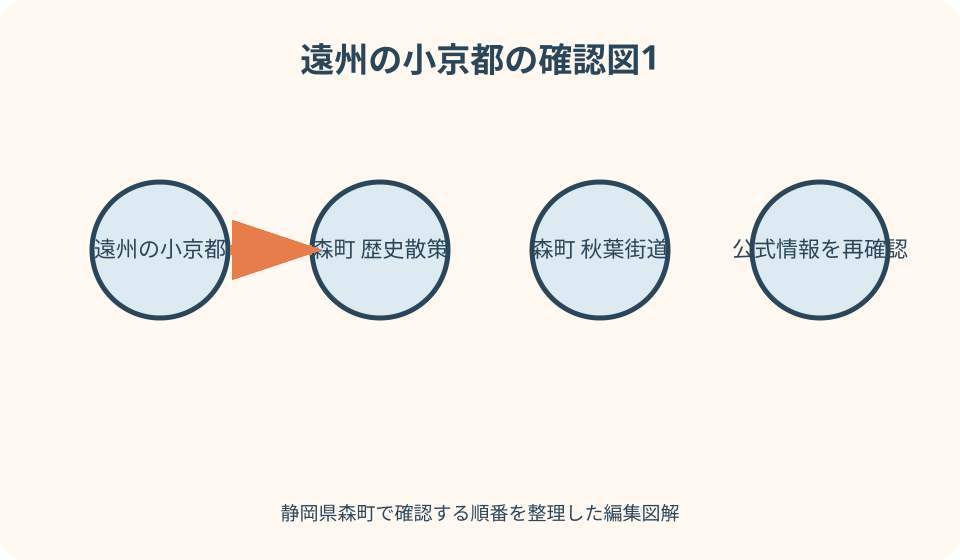
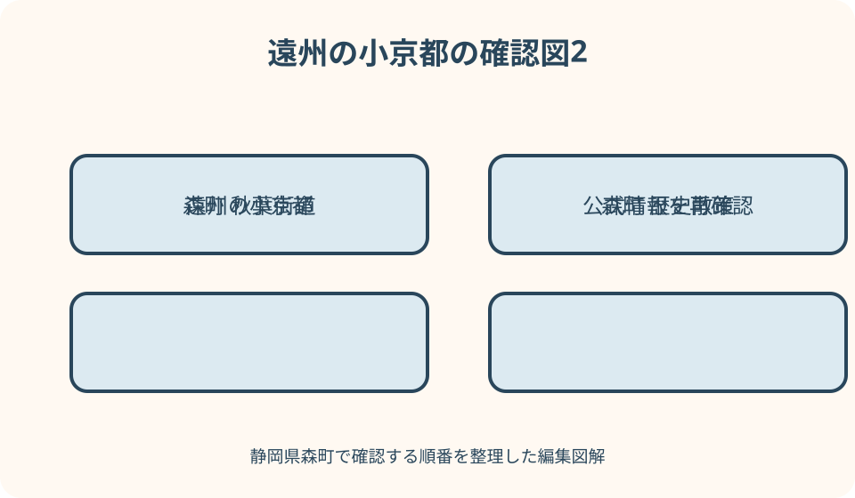

歴史・町歩き｜最終確認 2026-08-10
静岡県森町・遠州の小京都を歩く歴史散策｜遠州森駅から秋葉街道の町並みへ
森町の「遠州の小京都」は、三方の山と太田川の景観、志賀重昂が大正十二年に詠んだ「森町之賦」、京都とつながる伝統文化・産業を町が整理し、平成二十四年に全国京都会議へ加盟したことに根拠があります。散策は遠州森駅から本町の秋葉街道沿いへ向かい、公道から連子格子や鎧羽目、常夜灯を確認して駅へ戻る短い往復を基本にします。寺社は拝観可否を別に確かめ、私有地へ入らず、道路横断と帰りの列車を優先してください。
最初に決める——遠州森駅と本町を往復する短い線を引く
初めて静岡県森町を歩く日は、遠州森駅、本町の町並み、駅という往復を基本にします。寺社、資料施設、飲食店を最初から全部加えると、曲がり角や道路横断の確認が雑になります。まず町並みを見る時間と帰りの列車を固定します。
徒歩距離は、森町公式の観光パンフレットと当日の地図で、駅入口から目的地の入口まで道路に沿って測ります。直線距離や施設名の中心点を使わず、歩道のある道、横断歩道、通行止めを含む経路を選び、往復分を足します。
町の基本計画には約七・三キロメートルの「歴史の散歩道コース」も掲載されていますが、これは駅と本町だけの短時間散策と同じ経路ではありません。名称だけを借りて全行程を歩いたことにせず、短い市街地歩きと広域コースを分けます。
出発前に、日没、雨、気温、列車時刻、休憩場所を確認します。歩く速さは人によって違うため、地図アプリの標準時間へ撮影、説明板、信号待ち、休憩の時間を加えます。遅れたら寺社を外し、本町から駅へ戻ります。
呼称の根拠を知る——京都の縮小版という見た目だけで説明しない
森町公式は、北・東・西の三方を山に囲まれ、太田川が中央を流れる景観を「遠州の小京都」の背景として説明しています。京都にある特定の通りや建物をそのまま模した町という意味に狭めず、自然、歴史、文化、産業を合わせた呼称として読みます。
町の説明では、地理学者の志賀重昂が大正十二年に森町を訪れ、景観をたたえる「森町之賦」を詠んだことが呼称の由縁として伝えられています。散策中は詩の意味と現在の景観を重ねても、当時と同じ建物がすべて残るとは断定しません。
森町は平成二十四年十一月に全国京都会議へ加盟しました。町は加盟基準として、京都に似た自然や景観、京都との歴史的なつながり、伝統的な産業と芸能の三条件を挙げています。加盟年と志賀の来訪年を一つの出来事にまとめません。
したがって「小京都らしさ」は、古そうな家を見つけるだけでは完結しません。太田川と山の配置、寺社や祭礼、茶・和菓子・森山焼などを、公的資料で確認できる範囲で結びます。京都との類似を自分の印象だけで歴史的事実へ変えません。
秋葉街道を読む——参詣路、生活路、交易路の三面を見る
森町公式の図説町史は、秋葉道を秋葉山への参詣道として説明し、江戸時代後期には掛川から森、三倉、坂下を経て秋葉山へ通じる道者の往来があったと記します。現在の道路を江戸期の線形と完全に同じだとは扱いません。
同じ資料は、秋葉道が信仰の道だけでなく、生活、経済、文化などの交易の道でもあり、森の町筋が人馬の継立てや物資の集散、六斎市で栄えたと説明しています。本町では商家や旅籠の背景を、この複合的な役割から読みます。
秋葉信仰を示すものとして常夜灯や道しるべが紹介されています。現地で石造物を見つけても、説明板や文化財資料がないまま年代、建立者、元の位置を推測しません。文字が風化している場合は触ったり水をかけたりせず、見える範囲で記録します。
「森の横町なぜ日が照らぬ」という俗謡は、道者の笠が多かったという繁栄を伝える表現として町史に載ります。字面を実測の日照や常時の混雑として説明せず、往来の多さを語る伝承表現だと区別します。

遠州森駅から始める——登録有形文化財の駅を交通施設として見る
天竜浜名湖鉄道は遠州森駅を森町観光の玄関口と案内し、駅本屋と上りプラットホームが国の登録有形文化財であると掲載しています。駅そのものを最初の見学点にできますが、列車利用者の動線と鉄道の安全を最優先にします。
駅舎やホームを撮るときは、立入可能な場所だけを使い、線路へ近づいたり踏切外を横断したりしません。ホーム上で三脚を広げず、改札、乗車口、通路を塞ぎません。撮影可否に迷う設備や人物が入る構図は駅係員へ確認します。
駅敷地内には武家屋敷の土蔵を模したトイレや電話ボックスがあると鉄道会社が紹介しています。これは意匠の説明であり、本物の武家屋敷遺構とは書き換えません。外観を見た印象と文化財の指定対象も分けて記録します。
出発前に帰りの時刻表を写真で残し、駅の営業状況やきっぷの扱いを天浜線公式で確認します。朝夕は学生利用が多いとの案内もあるため、改札前で地図を広げず、駅の外の安全な場所へ移動して経路を確認します。
本町の町並みを見る——連子格子と鎧羽目を公道から探す
森町観光協会は、秋葉街道沿いの本町に連子格子や鎧羽目の板張りなどを備えた建物が点在し、古着商や旅籠に関わる江戸時代後期からの建物が宿場町の趣を残すと紹介しています。「通り全部が同年代」とは述べていません。
連子格子は細い材を並べた格子、鎧羽目は板を重ねる外壁として、観光協会の写真と現地の外観を照らし合わせます。専門家の調査なしに建築年代、構造、改修履歴を判定せず、「この意匠に見える」という観察と公的説明を分けます。
建物は現在も住宅や事業所として使われる場合があります。門、路地、駐車場、軒下へ入らず、道路の安全な位置から見ます。公開施設の表示がなければ内部見学を求めず、窓越しに生活空間を撮影しません。
外観を撮るときも、住人、車の番号、表札、宅配物が写り込まない角度を選びます。道路中央へ出て正面写真を撮らず、歩道がない区間では端へ寄り、車が来たら撮影を止めます。町並み保存は見学者の配慮から始まります。
建築を読む順番——意匠、用途、指定の有無を別の欄に書く
町歩きの記録は、目で確認した意匠、公的資料が述べる過去の用途、文化財指定の有無を三列に分けます。格子があるから旅籠、土蔵があるから江戸時代と決めず、観光協会の説明がどの範囲を指すか確認します。
森町公式の文化財一覧には国、県などの指定物件が載りますが、本町の古い外観を持つ建物がすべて指定文化財とは限りません。指定されていないことも価値がないという意味ではなく、制度上の区分と景観上の魅力を混同しないための確認です。
改修された店舗や再利用された建物では、新しい看板や設備と古い意匠が共存します。どこからが当初材かを見た目だけで断定せず、公開されている解説があれば読みます。営業中の店では見学だけで長居せず、利用ルールに従います。
屋根、格子、板壁を見上げながら歩くと足元への注意が薄れます。観察は一度安全な場所へ止まって行い、移動中は段差、側溝、自転車、車を見ます。同行者へ建物を示すときも、車道側へ突然出ないよう声を掛けます。

寺社を加える——町並み歩きと境内参拝を別の予定にする
森町公式は、町内に歴史ある寺社と文化財が多いことを案内しています。町なか散策へ天宮神社や蓮華寺などを加える場合は、所在地だけで近いと判断せず、入口までの徒歩経路、坂、道路横断、拝観時間を個別に確認します。
天宮神社では本殿・拝殿とナギが県指定文化財として町の一覧に掲載されています。ただし、祭事や神事の時間、立入区域、撮影可否は当日の案内に従います。文化財指定だから常時内部を見られるとは考えません。
蓮華寺には県指定の絵画書跡が掲載されていますが、所蔵品が常設公開されているとは限りません。寺の外観や境内を参拝することと、文化財を実見することを分け、公開情報がなければ見たと書きません。
寺社を一か所加えたら、町並みの観察点を一つ減らします。境内での参拝、休憩、御朱印などは時間が読みにくいため、帰りの列車に余裕がない日は外します。遠方の小國神社まで同じ徒歩散策へ詰め込みません。
文化財一覧を使う——指定名称と現地で見える対象を照合する
森町公式の文化財ページは、友田家住宅、次郎柿原木、天宮神社の建造物やナギ、寺社所蔵品などを区分して掲載しています。散策前に対象名、種類、所在地を読み、建物、樹木、民俗芸能、所蔵品を同じ見学方法で扱いません。
民俗芸能は指定文化財であっても、訪問日に実演される展示物ではありません。小國神社や天宮神社などの舞楽は奉納日程と観覧ルールを公式案内で確認します。通常日に境内を歩いたことを舞楽見学の体験へ置き換えません。
個人所有や管理者のいる建物は、文化財一覧に載っていても自由見学できるとは限りません。友田家住宅など町なか短縮コースから離れる対象を、距離を無視して追加しません。公開日、予約、交通を管理者へ確認します。
古い町史ページには、発行時点の情報が最新と異なる可能性があるという注記があります。歴史の説明には使えても、現在の開館、道路、連絡先には新しい公式ページを使います。資料の更新日と現況情報を一つのメモへ混ぜません。
徒歩距離を現実に合わせる——片道表示へ寄り道分を足す
地図で距離を測るときは、遠州森駅の出口、本町で折り返す地点、必要なら寺社の参道入口を経由点にします。施設の敷地中央までの直線ではなく、公道上の歩行経路を選び、往復距離に横断歩道への迂回と休憩場所への寄り道を足します。
公式計画に掲載された約七・三キロメートルの歴史の散歩道は、体力と時間を用意する別コースとして扱います。駅から本町を見る短縮散策を同じ距離と称さず、当日選んだルートを地図で再計測して同行者へ共有します。
高齢者、子ども、歩行に不安がある人と歩く場合は、距離だけでなく歩道の幅、段差、坂、横断回数、座れる場所を確認します。全員を標準徒歩時間へ合わせず、十分ごとに状態を聞き、戻る地点を事前に決めます。
スマートフォンの電池切れに備え、駅名、住所、帰りの時刻、観光案内の連絡先を紙にも残します。位置情報が細い路地へ誘導しても、私道や通行禁止表示があれば入りません。距離短縮のために危険な横断を選びません。
道路横断と歩道を確認する——写真より先に退避場所を見る
秋葉街道や町なかの道路は、歴史景観を見る場所であると同時に生活道路です。交差点では横断歩道と信号を使い、見たい建物が反対側にあっても斜め横断しません。車が少ない瞬間を安全の保証にしません。
歩道が狭い、または路側帯だけの区間では、一列で歩き、撮影のために後退しません。大型車や自転車が近づいたら、無理に壁際へ押し込まず、安全に待てる場所まで移動します。軒下や店舗入口を退避場所として無断使用しません。
交差点の角、駐車場出入口、バス停では立ち止まらず、少し離れた安全な位置で地図を見ます。同行者とは次に止まる場所を先に共有し、道路の両側へ分かれません。子どもの手を撮影のために放さないよう役割を決めます。
夕方や雨天は車から歩行者が見えにくくなります。明るい服、反射材、両手が空く雨具を使い、日没前に駅へ戻ります。歴史的な雰囲気を狙った夜間撮影は、初回の徒歩散策では計画しません。
私有地と撮影を守る——見えることと公開されていることを分ける
格子戸の奥や土蔵が道路から見えても、敷地が公開されているとは限りません。門が開いている、他の人が入った、地図に建物名があるという理由で入らず、公開表示と管理者の案内がある範囲だけを見学します。
住宅の表札、室内、住人、洗濯物、車両番号が写る構図を避けます。広角撮影で隣家まで入る場合は後で切り取る前提にせず、現地で向きを変えます。SNSへ投稿する前に位置情報と個人情報が残っていないか確認します。
寺社では、本殿内部、祭事、祈祷中の撮影が制限される場合があります。掲示を読み、不明なら社寺へ尋ねます。文化財はフラッシュ、三脚、接触を避け、柵の外から見ます。落ち葉や石を撮影用に動かしません。
店舗外観を撮る場合も、営業の妨げにならない位置から短時間で行います。撮影目的で商品棚や私物を移動させず、人物を写すなら同意を得ます。町並みを尊重する態度そのものが、歴史散策の品質を決めます。
休憩と食事を先に置く——古い建物の前を待合所にしない
出発前に公的な休憩場所、営業を確認した飲食店、駅へ戻れる地点を地図へ入れます。ベンチの有無を写真から推測せず、座れない場合に備えて立ち休憩を短く取れる安全な場所を観光案内で確認します。
住宅の石段、寺社の縁、店舗の軒先へ無断で座りません。飲食は店内、公園など許可された場所を使い、ごみを持ち帰ります。和菓子を買っても、路上や文化財の前で包装を広げる食べ歩きにはしません。
昼食時間をまたぐ場合は、店の営業日と予約を別に確認します。混雑で入れなければ町並み散策を延長せず、駅へ戻る、持参した補食を許可された場所で取るという代案を用意します。水分は早めに確保します。
体調に変化があれば、予定した寺社や撮影を外します。日陰が少ない時期、冷え込む雨天、祭礼の混雑では休憩間隔を短くし、同行者全員が戻れる余力を残します。歩いた距離を達成目標にしません。
雨天に組み替える——石畳の情緒より、足元と視界を優先する
雨天は、濡れた路面、側溝、車の水はね、傘で狭くなる視界を考え、駅と本町の往復だけへ短縮します。強雨、雷、警報がある場合は歩行を中止し、列車の運行情報と帰路を確認します。
両手が空く雨具と滑りにくい靴を使い、透明部分のある傘でも交差点では左右を大きく確認します。古い建物の軒下へ雨宿りに入らず、公的施設や利用許可のある店を休憩候補にします。
濡れた格子や板壁を近接撮影するために敷地へ寄らず、望遠や拡大も道路上の安全な位置から使います。雨粒を拭くため文化財や説明板へ触れません。機材を守る作業は通行を妨げない場所で行います。
雨天代案は、森町公式の観光パンフレットや図説町史を屋内で読み、次回の経路を作ることです。資料施設を利用する場合は開館と閲覧条件を確認します。現地を歩かなかった内容を、雨の町歩き体験として書きません。
短縮コースを作る——駅・本町・駅の三点で完結させる
時間が一時間程度しかない場合は、遠州森駅の外観を安全な位置から確認し、本町の町並みで連子格子または鎧羽目を一つ探し、同じ安全経路で駅へ戻ります。寺社、川沿い、買い物は次回へ回します。
さらに短い場合は駅周辺だけにし、登録有形文化財である駅本屋と上りホームの説明を公式ページで読みます。乗車しないホームへ無断で入らず、駅員の案内と乗客動線を優先します。これも歴史散策の入口になります。
途中で疲れたら、本町の最奥まで行くことをやめ、確認できた建築意匠を一つ記録して戻ります。往路と異なる近道を即興で探すと、私道や危険な横断へ入りやすいため、確認済みの往路を逆にたどります。
短縮しても「遠州の小京都」の呼称根拠は、出発前に町公式ページで読みます。景観を一部しか見られないことと、町の背景を理解できないことは同じではありません。次回に秋葉道や寺社を一項目ずつ加えます。
良い点——駅、街道、建築、文化が徒歩の視野でつながる
遠州の小京都を歩く良い点は、鉄道の玄関口から生活道路へ移り、秋葉街道の歴史と本町の建築意匠を同じ徒歩の視野で確かめられることです。大規模な観光施設を回るだけでは見えにくい町の連続性があります。
呼称には、志賀重昂の「森町之賦」、三方の山と太田川、全国京都会議の加盟条件、伝統産業や芸能という複数の根拠があります。事前にこれを知れば、一枚の古い建物写真だけで小京都を説明する誤りを避けられます。
本町では連子格子や鎧羽目、秋葉道では常夜灯や道しるべという観察軸を持てます。すべての年代を判定する必要はなく、公的資料が述べる範囲と自分が見た形を分けることで、史実を作らない散策になります。
遠州森駅へ戻る往復なら、車なしでも帰路を明確にできます。途中で寺社や店を一つ加える余地もありますが、戻る判断がしやすいことが最大の利点です。歩数より、安全に観察を終えることを成果にできます。
注文したい点——地図、公開範囲、交通、天候を当日に確認する
注文したい点の第一は、森町公式の観光パンフレットで目的地を確認し、当日の地図で実際の歩行距離を測ることです。工事、通行止め、横断歩道の位置が変わる可能性があるため、古い散策図だけで経路を固定しません。
第二は、寺社や文化財の公開範囲です。文化財一覧への掲載を常時公開の案内と読まず、拝観、資料館、祭事、撮影について管理者の最新情報を確認します。見られない所蔵品を見学目的へ入れません。
第三は、天浜線の列車時刻と駅利用ルールです。往路到着時に帰りの列車を決め、乗車に必要な時間を残して駅へ戻ります。駅舎撮影、ホーム移動、きっぷについて不明な点は鉄道会社へ尋ねます。
第四は、天候と同行者の歩行条件です。雨、暑さ、日没、道路の見通しを確認し、短縮地点を共有します。休憩できる施設の営業も確かめ、閉まっていた場合の駅戻りを最初から予定に含めます。
対案・結論——町並み一か所、寺社は任意、同じ道で駅へ戻る
結論として、初回は遠州森駅から本町の町並みへ歩き、連子格子または鎧羽目を公道から一つ確認し、同じ経路で駅へ戻ります。秋葉街道の役割と小京都の由縁を事前に読めば、この短い線でも歴史の層を理解できます。
時間と体力があれば、公開情報を確認した寺社を一か所だけ加えます。天宮神社の指定建造物やナギ、蓮華寺の歴史は町資料で確認できますが、拝観範囲と所蔵文化財の公開は別です。見られると断定しません。
雨天、暑さ、列車までの余裕不足なら、駅周辺へ短縮します。約七・三キロメートルの歴史の散歩道は別日に十分な準備で歩き、短縮散策の延長として不用意に入りません。徒歩距離は当日の公道経路で再計測します。
撮影では道路と私有地の境界を守り、人物や表札を写しません。古い町並みは展示セットではなく現在の生活空間です。見学者が交通と暮らしを妨げないことを、遠州の小京都を歩く最終条件にします。
大石の視点——歴史を断定する前に、現在の暮らしへ道を譲る
私がこの町を歩くなら、駅で帰りの列車を決め、本町で見る意匠を連子格子と鎧羽目の二つに絞ります。建物の年代を当てる散歩ではなく、公的資料の言葉と現地で見える形を照らし合わせる散歩にします。
秋葉道のにぎわいを想像しても、現在の道路では車と住民の移動が主役です。写真の構図より横断歩道を選び、住宅の前で立ち止まり続けません。過去を尊ぶことと、今暮らす人へ場所を譲ることは同じ方向にあります。
遠州の小京都という名も、京都に似た一枚を探す競争にはしません。山、川、町並み、寺社、産業、芸能を町がどう結び付けているか読み、見られなかった要素は資料で確認します。自分の印象を呼称の唯一の根拠にしません。
散策の終わりには、歩いた距離、見た場所、資料で知ったことを別々に記録します。短縮して駅へ戻った日も、危険な横断や私有地への侵入をせず、一つの意匠を正しく見られたなら十分です。次の一歩を残す歩き方が町を長く楽しませます。
公式情報・確認先
掲載内容は次の一次情報を基礎に整理しました。営業、料金、催し、交通は変わるため、出発前または手続き前にリンク先で最新情報を確認してください。